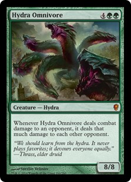
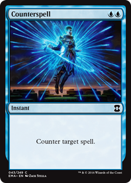
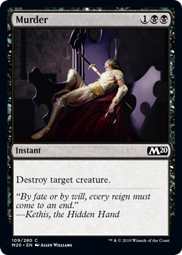
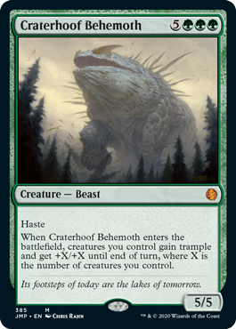
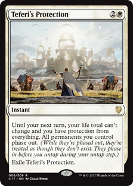
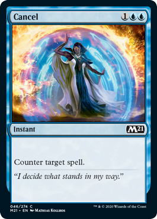
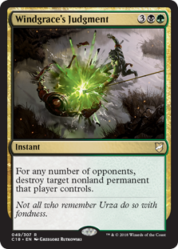

|
Howie’s Big Book of “Fuck That in Particular” A Treatise on Interaction
A Presenting Lethal Article Written By: Howard A. Aikins III Edited By: Joshua Francis and Sean Watson Adapted to Web by: Joshua Francis
I’d like to open with a few words. Firstly, some of the following content is fact, but much of it is opinion. Though my opinions are backed up by a reasonable degree of experience, they are, at the end of the day, the conclusions of a biased and imperfect man. With that in mind, I will do what I can to notably separate the former from the latter. This feeds directly into the next thing I wanted to touch on; fallibility. I am by no means perfect. This is not an exhaustive list, nor a perfect list. My intentions writing this piece are to share with you all the lessons and learnings I have obtained playing, studying, and competing in this game we love for so long now. It is simply impossible to break down and lecture on the intricacies of every scenario that the game could concoct. Beyond that, I have no desire to even if I could. Instead, my goal is to provide a peak into the underlying logic and reason that go into my decisions, in the hopes that those can create a sort of jumping off point that allows you to make your own informed decisions. Tangentially, I think its important to recognize that this is exactly that, a jumping off point. By no means do I intend for this to be something you read and immediately master. Not only would I consider myself someone who is still growing and learning on the subject, I also recognize these are complicated concepts that can take time and experience to grasp and even longer to internalize. As such, the secondary goal of the piece is to goad you all into asking questions. If there is something you struggle to understand within the paper, ask about it. If there is something the paper fails to cover, ask about it. If you find a scenario that seems to break from the ideas I have put down here, ask about it. I will not consider this piece a success unless it develops a legacy of spawned conversation.
Challenging Perspective: Understanding Why We Should Interact A friend once expressed to me in the past that “having your things removed is inherently a feels-bad moment and because of this, removing things is a dick move,” and I know others have had similar feelings. Allow me, though, to express a contrary viewpoint. Though it is easy to get caught up in the immediacy of “I was excited for my thing and I don’t get it anymore so I’m sad and you are awful”, that sentiment lacks perspective. Ultimately, Magic: the Gathering is a complex game. There are race games, where the entire point is to do your thing as best you can and your opponent does the same, and whoever did it better at the end wins. Magic is not one of those games. Every time you sit down you are entering into an involved puzzle that you have to unravel in order to achieve victory and much of the beauty is that the person sitting next to you is solving an entirely different puzzle, despite the fact they are participating in the same game. One of the main obstacles to overcome is your opponent(s)’ life total(s). Hopefully, the fact that your opponent starts at 40 life, despite the fact that you wish it to be 0 is not cause for alarm or frustration or anger. It is simply part of the game. Similarly, Interaction is a part of the game, a part of that puzzle that must be overcome. Beautifully, running Interaction yourself is a tool to help you solve that puzzle. It is inevitable that moments will arise in games that threaten to knock you out. After all, you have three players who all need you not to win in order for them to win. When these players do something that would knock you out of the game, having Interaction allows you to stop that thing. In that instance, you have another chance to win a game you would have otherwise lost. As such, running Interaction improves your chances to win. Even more beautifully, Interaction improves the fun of the game along the way. We have all experienced those matches where one player is far ahead of the rest of the table and it feels they are simply crushing everyone so badly there is simply no point in playing any longer. Interaction helps to prevent those situations from happening as well as reverse them once they occur. Interaction gives all the players at the table some say in how the game flows and progresses allowing for each game to be jointly created by the sum of decisions and interactions. By not running Interaction you are deciding not to be a part of that process. Similarly, Interaction helps to bridge the gap between decks of varying power levels. If your deck is somewhat behind the power curve of the table, or if one of your opponents is notably above it, Interaction can help you to punch above your weight class in the former or keep someone else in check in the latter. In both of these cases, everyone gets to enjoy a more fun play experience because everyone gets to feel like they are participating in the game rather than being run over. In all, having access to enough Interaction creates a better gaming experience for everyone at the table and is a vital part of cultivating an engaging and enjoyable environment.
There are three primary terms that get tossed about when having this type of discussion: Interaction, Disruption, and Removal. Interaction is a broad term that refers to any spell used to hinder your opponent’s game plan, rather than furthering your own. Interaction is then broken down into two types, Disruption and Removal. Disruption references spells that prevent a spell from resolving the way the caster intended. They are cards that counter a meaningful spell or change how it affects the board. Removal includes spells that directly take a threat off the board. The key difference between Disruption and Removal is timing. Disruption must be used before a threat has resolved and as such is colloquially referred to as Proactive Interaction. Removal on the other hand is used after the threat in question has resolved, thus sometimes being referred to as Reactive Interaction. I find the terms Proactive and Reactive to be misleading however, so this is their last appearance within this piece. Its important to recognize that simply being an Instant does not make a spell Disruption rather than Removal. If the threat we are trying to deal with is a Hydra Omnivore
(Fig. 1.1), for example, both Counterspell
(Fig. 1.2) and Murder
(Fig 1.3) can deal with the threat and both are Instants. However, in order to use their Counterspell
, a player must have their two blue mana open and the spell in hand when their opponent casts Hydra Omnivore
. This reliance on being set up to interact at a time of the opponent’s choosing makes Counterspell
a Disruption spell. The player with Murder
on the other hand need not have the card in hand nor the mana open when the Hydra Omnivore
is cast, instead they have the luxury of taking it off the board at a later time, theoretically even on a later turn. This ability to interact at any time after the threat has resolved but only after the threat has resolved, characterizes Murder
as a Removal spell. This is not to say that Removal is inherently better than Disruption. If we change the threat instead to, say Craterhoof Behemoth
(Fig 1.4), the Counterspell
can prevent the entirety of the effect from occurring. Since countering the Craterhoof prevents it from ever entering the battlefield, the rest of the opponents board does not receive any buffs and the attack is all but negated. Conversely, the player that has the Murder
can still kill the Craterhoof, but not before it turns the opponents board into a devastating attack. Though counter spells are the most common and robust example, Disruption can also take the form of protection. Cards like Teferi’s Protection
and Heroic Intervention
 can function akin to Disruption spells when used to prevent a board wipe from clearing your board or preventing your death due to a massive attack or burn spell. They are simply more situational and should be treated as such. As a simplification, Disruption is best used to deal with threats that deal their damage at the time they resolve. Removal is best used to deal with threats that deal their damage over time.
Versatility Versus Efficiency: Understanding How to Value Interaction Much of your Interaction achieving the aforementioned ends rests on choosing the proper tools for the job. If your cards are too clunky or hard to use, they will fail to serve your needs and will ultimately be worse than if you simply refrained from running them in the first place. To prevent such awkwardness we rate Interaction spells on a two-axis scale: those two axes being Efficiency and Versatility. In any given game you have limited resources. To that end, our goal is to find the Interaction spells that do the most, for the least. This is referred to as Card Efficiency. To increase the Efficiency of our cards we either need to find ones that do more or that cost less. The most obvious example of this is Cancel
(Fig 2.1) versus Counterspell
. The two spells have identical text, however, Cancel
costs one more generic mana than Counterspell
. As such, Counterspell
is more Efficient, doing the same thing for less. A similar example is Murder
compared to Windgrace's Judgement
. Though Windgrace's Judgement
costs two more mana, it removes up to three permanents. If you only had Murder
in your deck, it would require you to spend nine mana and three cards to remove what Windgrace's Judgement
does for five mana and one card. Thus, Windgrace's Judgement
is more Efficient. Efficiency is only one axis, however, as Versatility is equally important to consider. Commander is a format that includes nearly every card in Magic’s long history. With so many different kinds of threats that you will face, it is vital to ensure that the tools you have can challenge a wide range of those threats. Cards like Doom Blade are very efficient but you pay for that Efficiency by limiting its targets to only creatures that are not black. Compare this to, say Generous Gift, which costs more mana, and gives your opponent a creature, but widens the range of targets to literally anything on the battlefield. Disruption is also a form of added Versatility as it gives you access to stopping threats that cannot be stopped by Removal. As was discussed earlier, this type of Versatility is paid for with preparation, forcing you to hold open mana and have the card in hand at the right moment, and forcing you to make the choice right then and there. Choosing what Interaction spells to include in your deck (often called a Removal Suite) is a balancing act between Versatility and Efficiency, taking into account how your deck wants to play. Decks that want to play aggressively, pushing out lots of creatures and trying to overwhelm their opponents struggle to play Disruption well because every mana held open for such spells and every card in their hand they may not use immediately is Tempo they are losing from the board. This deck probably wants to run some Disruption however, because otherwise it has no answer to potentially game-ending plays. Conversely decks that seek to accumulate a large advantage through cards or other resources throughout the game are far more willing to use exceptionally versatile spells because they naturally reduce the impact of such costs. Similarly, though, if all of their spells are inefficient, they will struggle to keep pace with the game and leverage those additional resources into a victory. A note should be made about board wipes or “sweepers”. These follow the same rules for other Interaction. They tend to be very efficient, by nature of them killing lots of things, but you often pay for that efficiency w As a general rule, you want to have a balance of Versatility and Efficiency across your removal suite, usually using cards that find a sweet spot between those two concepts.
Threat Assessment: Understanding When to Interact The average deck will have about twice as many threats as Interaction, those Interaction spells are unlikely to line up perfectly one-for-one, and you have three opponents. All of this leads to one conclusion: It is inevitable that your opponents will play more threats than you have Interaction. In order to offset this undeniable fact, we have to determine what we want to remove and what we allow to stick around. Threat Assessment, as this process is called is a complex and abstract concept, involved enough, in fact, that an entire article like this one could be written about it. It defies attempts to break it down and simplify it, largely because it relies on a large amount of guess-work and predictions. The most overly-simplified way of explaining it is this: if the threat in question is going to lose you the game, remove it, otherwise leave it alone. This may seem obvious, and on the face, it is. Some threats are really easy to identify. If a player is resolving a spell or ability that literally wins them the game on the spot such as a massive Torment of Hailfire or a World Tree activation, it is self-evident that the threat is one you need to interact with. The trouble is, most cards do not include the text “You win the game” for obvious reasons. Most cards give the player casting them some amount of advantage and understanding how much advantage that is, and how much is necessary to be considered “winning” is exceptionally difficult. Lets look at the example we used previously. Your opponent is casting a Hydra Omnivore
and you have a Counterspell
in hand. Whether or not you counter the Hydra is based on a number of factors including:
Some of these questions are easier to answer than others. You can physically count the number of cards in everyone’s hands and you can count the number of times it hits you before you die. But it can be harder to answer questions like, is there something scarier or can I race it down? Herein lies the difficulty with Threat Assessment. It is important to recognize that all these questions are ultimately trying to answer one broad overarching question: Does this threat put my opponent close enough to their goal that they are going to get to it before I get to mine? That is no easy question to answer, but understanding that as the final goal of your thinking should help frame you to ask the right questions and come up with more meaningful answers. A few pieces of advice I can give: Be patient where you can. Identify how much time you have before making decisions. If all you have is a counter spell, then you have no time, it is now or never. On the other hand, if you are using something like Murder
to kill the threat in question, you can wait and see what happens before you decide whether or not to remove the threat. If the Hydra Omnivore
in question is never declared as an attacker, maybe it is worth saving your removal spell. If the person it is attacking has good blocks, maybe it is worth saving your removal spell. If your opponent goes to buff it, then you know it is more of a problem and can remove it accordingly. Waiting until your opponent has made their decisions like whether or not to attack, who to attack, and what else to cast, gives you valuable information towards answering many of those difficult questions. Be greedy with your Interaction. I have found that it is far better to leave something alone and discover later that it was a problem, than to be trigger-happy with your Interaction and find yourself with no answers left when the real problem shows up. If something gets out of control, you can often times remove it later or try to use it as a political tool to make allies. You also just know for future to be more weary of the card in question. If you remove things without really seeing what they are capable of doing, you never get to learn whether you should have done so. Be reflective on games you play. Think about what choices you made, what you removed and challenge yourself to prove it was the right thing to do. Make sure you are honest with yourself, though. It is better to realize you are wrong and learn for next time than to justify your incorrect decision to yourself and never improve. Ask other players what they thought or what they would have done differently. The player whose threat you are interacting with is an especially good resource here as they have answers to a lot of the questions you were trying to answer. Lastly, never stop at the mistakes you made. Ask yourself about the correct decisions you made and try to identify why it was the right call. Identifying those reasons can go miles towards recognizing similar situations in the future. Be strategic I the way you think about your plan and your opponents’. Many of the answers to these questions require an understanding of the goals within the game. Ask yourself how your deck plans to win, try to be as detailed as possible when formulating that plan. Identify what pieces you have toward that plan and what you still need, but then ask yourself how far you are from getting those pieces you need. Beyond all of that, though, do the same for your opponent. If your opponent is playing a group of cards that seem to have little aggressive presence, but generate a lot of value in the long run, recognize that they will probably not kill you out of nowhere. Be aggressive with your attacks and try to punish them for playing the long game. Use your Interaction on value engines like card draw or extra mana rather than on big dumb creatures. If your opponent is playing a number of efficient attacking bodies, prepare to be attacked and guard your life total as best you can. Save your removal for key pieces of their attack or big buff cards they will try to use to close out the game. Remember, only Interact with things too powerful to win against. Resist the temptation to waste your Interaction on flashy or scary, but ineffective cards.
The Enemy of My Enemy is My Friend: Understanding the Nature of a Political Game As if the Threat Assessment conversation lacked complexity as is, the nature of Commander complicates it even more so. Previously I made a few comments on the nature of having three opponents and how that increases the difficulty of keeping up with your removal. The good news is, additional opponents are not entirely a bad thing. It is true that you need all of your opponents gone to win the game, but it is also true that you and any given player need two of the same players gone for each of you to win. Armed with this knowledge there are a few new ways to look at Interaction that we can benefit from. Firstly, by adequately navigating the social landscape you can use your opponents removal as your own. Returning once more to the instance we used previously where one of your opponents is casting a Hydra Omnivore
. If you have a Counterspell
in hand, but another of your opponents has a Murder
in hand you might be able to convince them to use their spell instead of yours either by hiding that you have the Counterspell
, or by promising not to attack them for a turn or two if they use it. These situations can be difficult to identify and even harder to navigate, but successfully doing so, removes a threat without using your Interaction piece, but furthermore takes an Interaction piece out of another of your opponents’ hand. Inversely, there are times where we can use our Interaction to glean favor from our opponents. Agreeing to use your Counterspell
on the Hydra Omnivore
that is significantly more frightening to another of your opponents who has no answer might allow you to negotiate a favor or some good will with that player. You might agree to do so only if that player agrees not to attack you, or maybe that they use another of their resources in your favor. This can be tricky to attempt as you if you are removing something you would have removed anyways, good players will identify that and become more hostile rather than less. If the threat is not one you would remove anyways, you are offering to use your mana and your card to help your opponents, make sure to get something worth at least that much in return. Additionally, when trying to decide whether or not to interact with a threat, it can be worth looking at how problematic that threat is to your opponents. If it harms them more than you, that is ultimately helping you towards your goal of winning. Sometimes the best ways to save your Interaction is to identify when your opponents threats do more work for you than they do against you. When that Hydra Omnivore
comes down, if you have more life than any of your opponents, all of you being hit equally can be in your favor, even if it costs you some life. You might even offer to let it hit you when you otherwise might have good blocks, just to ensure it hits your opponents. Always be watching for opportunities to use other players as advantages against your shared opponents. The enemy of my enemy truly is my friend.
White Targeted/Direct Interaction
An incredibly efficient Removal spell, ‘Swords’ only costs one mana to remove a creature of any color or type. Its down side is that it gives your opponent life, which is rarely of consequence in Commander. The exile clause is a surprisingly big deal to, as it gets around indestructible and recursion.
Not recommended for very aggressive decks.
Efficiency: Exceptional
Versatility: Low
A close rival to ‘Swords’ as it too costs a lowly one mana, ‘Path’ instead gives your opponent a land. Ramping your opponent is no small thing, and so is not to be taken lightly, but it will almost certainly be less meaningful than whatever creature gets the boot. The exile clause is a surprisingly big deal to, as it gets around indestructible and recursion.
Efficiency: Exceptional
Versatility: Low
A Removal spell that swaps whatever target for a 3/3 Elephant. Besides being wonderfully punny, it boasts unmatched versatility at a reasonably efficient rate.
Efficiency: Medium
Versatility: Exceptional
A reasonable spell that finds a nice sweet spot between versatility and efficiency. When cast during your main phase, removing two targets for four mana is good efficiency, but the limit to only enchantments and artifacts means it only has a limited amount of versatility.
Efficiency: Low or High
Versatility: Medium
These cards read similarly with only semantical difference. Both are a good rate with strong versatility. They suffer in that they are temporary and sorcery speed.
Efficiency: High (Until Removed)
Versatility: Medium
Very comparable to ‘Path’ but with the added flexibility of being used as a very expensive board wipe. Use if you are struggling to find enough slots for removal.
Efficiency: High
Versatility: Low
High efficiency answer if you are looking to interact with non-creature threats.
Efficiency: High
Versatility: Low
Very similar to ‘O-Ring’ and Banishing Light, Grasp of fate adds some additional efficiency by hitting multiple targets and some interesting political pressure. If you are great at politics, better than ‘O-Ring’.
Efficiency: Exceptional (Until Removed)
Versatility: Medium
Honorable Mentions (Targeted)
Deck specific card. If your deck is running a lot of Artifacts (at least 30), then this is a better ‘Path’ or ‘Swords’. If not, this is awful.
A weird situational card. Though it may seem incredibly specific in its targets, it is instant speed and can hit almost every commander. Think about your playgroup and meta before running, but exceptional in the right meta.
Super inefficient when you take into account the cards they draw. In addition, if they draw the card is a way worse Unsummon (which doesn’t even make the blue list). However it does have the very interesting clause of tucking rather than exiling or destroying. Extremely situational, but unique in its situation.
An inefficient counter spell, but the only counter spell available to white.
A super versatile spell at an efficient rate that trades removal versatility for dual purpose use. Can be used as a sort of counter spell against your opponents targeted removal.
Sweepers
Honorable Mentions (Sweepers)
Blue Targeted/Direct Interaction
Honorable Mentions
Sweepers
A Note on “Free Counterspells”: Black Targeted/Direct Interaction
Sweepers
Red Targeted/Direct Interaction
Sweepers
Green Targeted/Direct Interaction
13 Sweepers
White and Blue (Azorius) Targeted/Direct Interaction
Sweepers
White and Black (Orzhov/Silverquill) Targeted/Direct Interaction
Sweepers
White and Red (Boros/Lorehold) Targeted/Direct Interaction
Sweepers
White and Green (Selesnya) Targeted/Direct Interaction
Sweepers
Blue and Black (Dimir) Targeted/Direct Interaction
Sweepers
Blue and Red (Izzet/Prismari) Targeted/Direct Interaction
Sweepers
Blue and Green (Simic/Quandrix) Targeted/Direct Interaction
Sweepers
Black and Red (Rakdos) Targeted/Direct Interaction
Sweepers
Black and Green (Golgari/Witherbloom) Targeted/Direct Interaction
Sweepers
Red and Green (Gruul) Targeted/Direct Interaction
Sweepers
Appendix B: Referenced Cards |